SIPERJAL · Pembaruan perlengkapan terpasang
Kode register,
Dijelaskan per peran: siapa melakukan apa, dan urutannya . Di setiap gambar, tanda 1 menunjuk bagian yang perlu diperhatikan, dengan nomor yang sama di penjelasannya.
Admin
Dishub · Koordinator
Masyarakat
Dishub · Petugas lapangan
Gambaran besar
Satu alur, empat peran
Ikuti nomornya dari kiri ke kanan. Semuanya bermuara di riwayat unit .
1 Isi kode singkat jenis & kecamatan
Dishub · Koordinatordi kantor
2 Unit terpasang otomatis berkode
3 Cetak label QR, tempel di lapangan
5 Tugaskan petugas
4 Pindai QR, lihat info, lapor rusak
Dishub · Petugas lapangandi lokasi, lewat HP
6 Cek, perbaiki, Selesai ; catat rutin
✓ Riwayat unit terisi otomatis
Kode register
Satu unit, satu kode, satu riwayat
PJU-001-SPE-26
Bagian 1 PJU Kode jenis (lampu penerangan jalan)
Bagian 2 001 Nomor urut per jenis, kecamatan, dan tahun
Bagian 3 SPE Kode kecamatan (Simpang Empat)
Bagian 4 26 Tahun pemasangan (2026)
Jenis Cara memberi kode Rambu, lampu PJU, lampu peringatan, traffic light, kerucut PER UNIT Tiap unit punya kode sendiri: 5 rambu di satu titik = 5 kode Marka, guardrail, pita getar, ZoSS PER RUAS Satu kode untuk satu ruas: marka 120 m = 1 kode
Otomatis Tidak perlu diketik. Kode muncul begitu unit tercatat terpasang.
Tidak berubah Kode tetap walau alamat diperbarui, jadi label yang tercetak aman.
Tidak dipakai ulang Unit dihapus? Nomornya tidak diberikan ke unit lain.
Admin Alur peran · sekali di awal
Admin menyiapkan kode singkat
Cukup sekali. Setelah itu kode semua unit terbentuk sendiri.
1 Kode jenis Slide berikut
→
2 Kode kecamatan Slide berikut
→
✓ Kode terbentuk otomatis Tidak ada langkah tambahan
Perhatikan Admin hanya melihat Aset, Usulan, dan Pemeliharaan. Mencatat, menugaskan, dan menyelesaikan adalah tugas Dishub.
Admin Langkah 1 dari 2
Isi kode tiap jenis perlengkapan
1 · Kode jenis → 2 · Kode kecamatan → ✓ Kode otomatis
1 Buka Pengaturan → Perlengkapan .
2 Isi kolom Kode : 2–4 huruf, unik (RMB, PJU, WL…). Tersimpan otomatis.
3 Pilih Per unit atau Per ruas . Ini menentukan berapa kode yang dibuat.
4 Kotak kuning menjelaskan susunan kode sebagai contekan.
Perhatikan Mengubah kode hanya berlaku untuk unit baru . Label yang sudah tercetak tidak ikut berubah, jadi tetapkan kode resmi sebelum mulai mencetak.
Admin Langkah 2 dari 2
Isi kode tiap kecamatan
1 · Kode jenis → 2 · Kode kecamatan → ✓ Kode otomatis
1 Buka Pengaturan → Wilayah & Jalan .
2 Isi kode di samping nama kecamatan, mis. BTL untuk Batulicin.
3 Jumlah unit di kecamatan itu ikut tampil. "—" berarti belum ada unit.
Belum lengkap? Unit tanpa kode jenis, kecamatan, atau tahun tetap tercatat sebagai "Belum berkode" . Kodenya menyusul otomatis begitu datanya lengkap.
Dishub · Koordinator Alur peran · di kantor
Koordinator mengelola aset dan labelnya
1 Buka Aset
→
2 Lihat unit
→
3 QR & label
→
4 Tugaskan
→
5 Pantau & unduh
Masuk dari mana? Di atas daftar ada pilihan Usulan · Pemeliharaan · Aset . Semua langkah di bagian ini ada di Aset , kecuali langkah 4 di Pemeliharaan .
Dishub · Koordinator Langkah 1 dari 5
Buka Aset dan temukan unitnya
1 · Buka Aset → 2 · Lihat unit → 3 · QR & label → 4 · Tugaskan → 5 · Pantau & unduh
1 Klik Aset di pilihan atas daftar.
2 Cari lewat kode, jenis, atau lokasi ; Filter untuk kecamatan, jenis, kondisi.
3 Jalan pintas: Dekat saya , dilaporkan rusak , dan belum berkode .
4 Pilih untuk cetak label massal, Unduh untuk Excel/CSV, + untuk data lama.
5 Tiap baris diawali kode register , lalu kondisi, jenis, lokasi, dan kapan terakhir dirawat.
Perhatikan Ketuk belum berkode secara berkala. Biasanya karena kecamatan atau tahun pasang kosong; lengkapi agar unit bisa diberi label.
Dishub · Koordinator Langkah 2 dari 5
Klik unit untuk melihat semuanya
1 · Buka Aset → 2 · Lihat unit → 3 · QR & label → 4 · Tugaskan → 5 · Pantau & unduh
1 Salin kode untuk ditempel di surat atau chat.
2 Lihat QR untuk unduh atau cetak label unit ini.
3 Catat pemeliharaan rutin langsung dari sini.
4 Koordinat bisa diklik: Buka di Google Maps .
5 Sumber : nomor usulan, atau "Sebelum SIPERJAL" untuk data lama.
6 Riwayat dari laporan menyebut nomor laporannya; catatan petugas = rutin.
Perhatikan Unit yang sudah punya riwayat atau laporan tidak bisa dihapus .
Dishub · Koordinator Langkah 3 dari 5 · satu unit
Satu unit, satu QR
1 · Buka Aset → 2 · Lihat unit → 3 · QR & label → 4 · Tugaskan → 5 · Pantau & unduh
1 Pratinjau label : QR, kode, jenis, dan kecamatan.
2 Alamat yang tersimpan di dalam QR. Bisa disalin.
3 Unduh gambar PNG atau SVG untuk dicetak di tempat lain.
4 Cetak label langsung dari peramban.
Perhatikan sebelum mencetak Alamat di QR mengikuti alamat server. Pada gambar ini masih alamat uji (127.0.0.1 ). Pastikan aplikasi sudah memakai domain resmi sebelum label dicetak, karena QR yang tercetak tidak bisa diubah.
Dishub · Koordinator Langkah 3 dari 5 · banyak sekaligus
Pilih unit, unduh PDF label
1 · Buka Aset → 2 · Lihat unit → 3 · QR & label → 4 · Tugaskan → 5 · Pantau & unduh
1 Klik Pilih di daftar Aset, lalu centang unit.
2 Atau Pilih semua hasil dari saringan aktif.
3 Ukuran Sedang 60×30 (24/lembar) atau Kecil 40×20 (65/lembar).
4 Unduh PDF label , maks. 200 sekali unduh.
5 Unit belum berkode abu-abu, tidak ikut dicetak.
Dishub · Koordinator Langkah 3 dari 5 · hasil cetak
Lembar label siap potong
1 · Buka Aset → 2 · Lihat unit → 3 · QR & label → 4 · Tugaskan → 5 · Pantau & unduh
1 QR : dipindai dengan kamera HP biasa.
2 Kode register tercetak tebal, untuk diketik bila QR rusak.
3 Garis tipis = panduan potong .
Perhatikan Cetak di kertas stiker A4 dengan skala 100% (jangan "fit to page"). Cetak satu lembar uji dan pindai dengan HP sebelum mencetak banyak.
Lebih dari 200 unit? Saring per kecamatan, lalu cetak bertahap.
Dishub · Koordinator Langkah 4 dari 5 · di Pemeliharaan
Laporan warga masuk, tugaskan petugas
1 · Buka Aset → 2 · Lihat unit → 3 · QR & label → 4 · Tugaskan → 5 · Pantau & unduh
Buka Pemeliharaan → tab Baru , klik laporan, lalu Tugaskan Petugas . Detail laporan menyebut kode unit , jadi jelas perlengkapan mana yang dimaksud.
1 Pilih petugas. Label Disarankan = tugas aktif paling sedikit.
2 Catatan opsional, terlihat petugas di tugasnya.
3 Klik Tugaskan . Petugas langsung menerima notifikasi.
Perhatikan Hanya koordinator yang bisa menugaskan atau menolak laporan. Petugas lapangan tidak melihat tab Baru.
Dishub · Koordinator Langkah 5 dari 5
Unduh daftar, pantau riwayat per tanggal
1 · Buka Aset → 2 · Lihat unit → 3 · QR & label → 4 · Tugaskan → 5 · Pantau & unduh
KIRI · UNDUH
1 Klik Unduh di atas daftar.
2 Excel : koordinat jadi tautan Google Maps.
3 Isinya mengikuti saringan yang aktif.
KANAN · TAB RIWAYAT
1 Buka tab Riwayat .
2 Filter : kecamatan, jenis, asal, petugas.
3 Rentang: hari ini, 7 hari, bulan ini, pilih tanggal .
4 Dikelompokkan per hari .
5 LPR-… = berasal dari laporan warga.
6 Rutin = dicatat petugas.
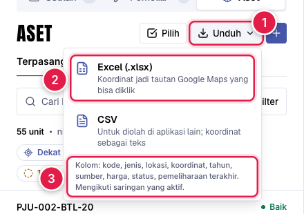
Menu Unduh 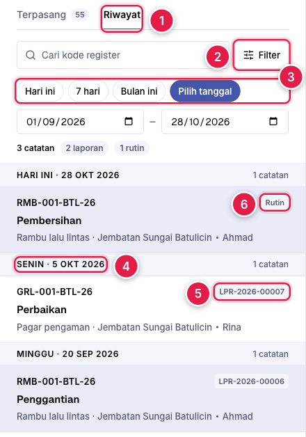
Tab Riwayat
Masyarakat Alur peran · tanpa akun, lewat HP
Warga memindai, lalu melapor
1 Pindai QR
→
2 Lihat info & riwayat
→
3 Lapor rusak
→
✓ Masuk ke Dishub
Tanpa QR? Bisa juga dari peta beranda : klik pin perlengkapan terpasang.
Tidak ditampilkan ke publik Harga, nama petugas, nomor laporan, dan foto.
Masyarakat Langkah 1–2 dari 3
Pindai QR: info dan riwayat langsung terbuka
1 · Pindai QR → 2 · Lihat info & riwayat → 3 · Lapor rusak
1 Kode register unit, sama dengan yang tercetak di label.
2 Kondisi : hijau bila tidak ada laporan berjalan.
3 Lokasi + Buka di Google Maps .
4 Riwayat pemeliharaan : tanggal dan kegiatan, terbaru di atas.
5 Lapor rusak membawa ke form laporan unit ini.
Perhatikan Halaman ini sama untuk petugas Dishub, hanya ditambah bilah akun, nama petugas di riwayat, dan tombol Catat (lihat bagian Petugas lapangan).
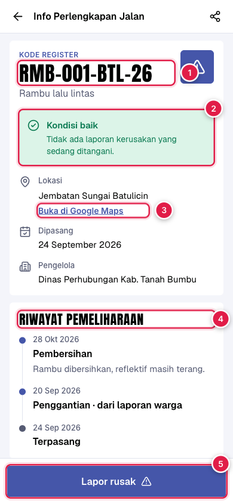
/aset/RMB-001-BTL-26
Masyarakat Langkah 3 dari 3
Lapor rusak, atau ketik kodenya
1 · Pindai QR → 2 · Lihat info & riwayat → 3 · Lapor rusak
KIRI · FORM LAPOR
1 Unit sudah tertaut otomatis : kode, jenis, lokasi.
2 Pilih apa yang terjadi .
3 Foto wajib; nama & email opsional.
KANAN · QR RUSAK / KODE SALAH
1 Ketik kode yang tercetak di samping QR.
2 Petunjuk: huruf O dan angka 0 sering tertukar.
3 Tetap bisa melapor tanpa kode .
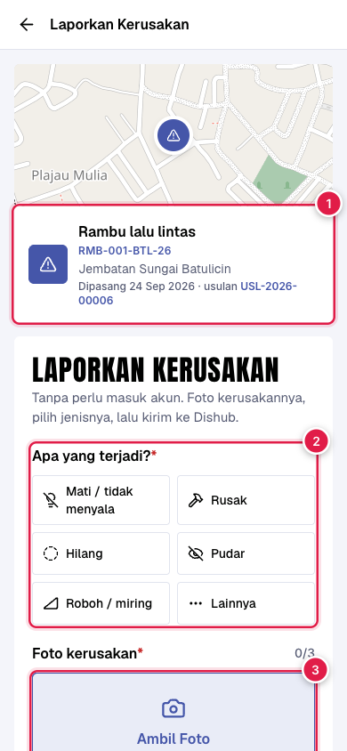
Form lapor 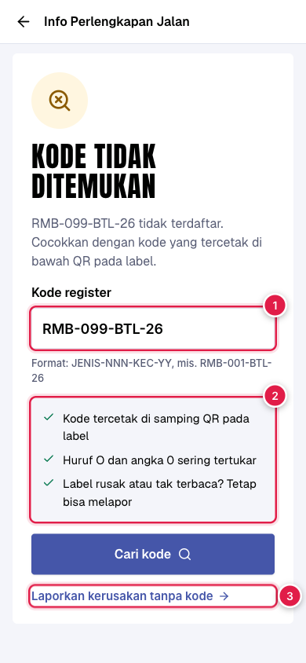
Kode tidak ditemukan
Masyarakat Jalan lain · peta beranda
Tanpa QR: klik pin di peta
Peta beranda → 2 · Lihat info & riwayat → 3 · Lapor rusak
1 Unit sejenis di titik yang sama jadi satu pin berlencana jumlah.
2 Popup memuat daftar kode dan kondisinya. Klik kode untuk info & riwayat.
3 Laporkan kerusakan di titik ini otomatis memakai unit yang belum dilaporkan.
Lebih rapi Lima rambu di satu tiang tidak lagi menjadi lima pin bertumpuk.
Perhatikan Satu unit hanya punya satu laporan berjalan . Pin dengan laporan terbuka bercincin kuning.
Dishub · Petugas lapangan Alur peran · di lokasi, lewat HP
Petugas bekerja dari lokasi
Ada dua jalur kerja. Keduanya berakhir di riwayat unit .
A · Perawatan rutin
A1 Dekat saya
→
A2 Pindai QR / buka unit
→
A3 Catat pemeliharaan
→
✓ Riwayat bertambah
B · Laporan warga
B1 Tugas masuk
→
B2 Cek Kondisi
→
B3 Selesai diperbaiki
→
✓ Riwayat terisi otomatis
Dishub · Petugas lapangan Jalur A · langkah 1–2
Temukan unit terdekat, lalu buka
A1 · Dekat saya → A2 · Pindai / buka unit → A3 · Catat pemeliharaan
KIRI · DAFTAR ASET DI HP
1 Buka Aset .
2 Ketuk Dekat saya , izinkan lokasi.
3 Jarak tampil di tiap unit.
4 Yang terdekat paling atas.
KANAN · HASIL PINDAI QR
1 Bilah akun tanda sedang masuk sebagai petugas.
2 Pastikan kode sama dengan label fisiknya.
3 Riwayat unit ini.
4 Catat pemeliharaan (jalur A3).
Privasi Posisi GPS hanya dipakai mengurutkan, tidak disimpan .
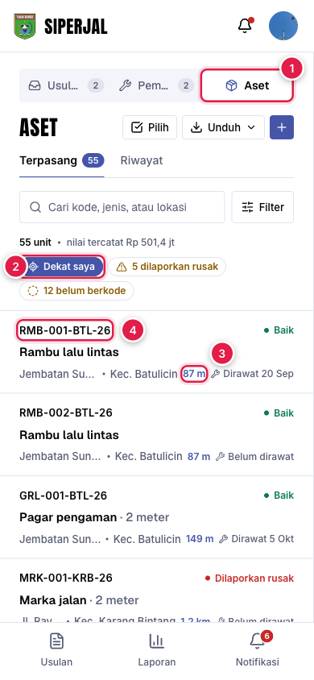
Aset · Dekat saya 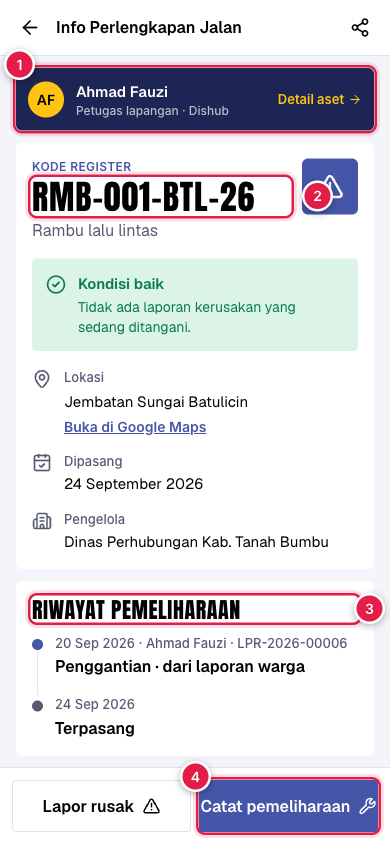
Hasil pindai QR
Dishub · Petugas lapangan Jalur A · langkah 3
Catat pemeliharaan dalam satu layar
A1 · Dekat saya → A2 · Pindai / buka unit → A3 · Catat pemeliharaan
KIRI · FORM CATAT
1 Pilih kegiatan : Rutin, Pembersihan, Perbaikan, Penggantian, Lainnya.
2 Tanggal otomatis hari ini ; ketuk Ubah bila perlu.
3 Catatan dan foto boleh kosong.
4 Simpan catatan .
KANAN · SETELAH DISIMPAN
1 Catatan muncul paling atas di riwayat.
Salah catat? Ketuk Urungkan di pemberitahuan yang muncul sesaat setelah menyimpan. Catatan sendiri juga bisa dihapus selama 10 menit.
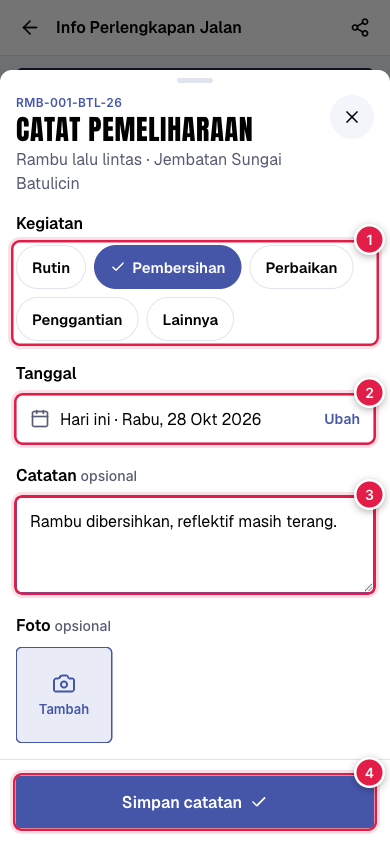
Form catat 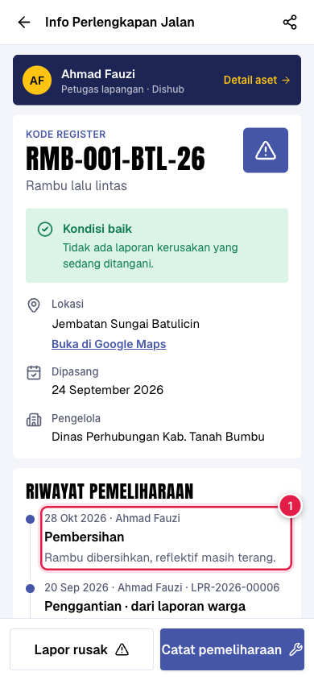
Setelah disimpan
Dishub · Petugas lapangan Jalur B · laporan warga
Cek kondisi, lalu tandai selesai
B1 · Tugas masuk → B2 · Cek Kondisi → B3 · Selesai diperbaiki → ✓ Riwayat otomatis
KIRI · DETAIL TUGAS
1 Kode unit yang dilaporkan; cocokkan dengan label di lokasi.
2 Siapa yang menugaskan + catatannya.
3 Cek Kondisi : foto keadaan sekarang, putuskan diperbaiki atau tidak.
KANAN · SELESAI DIPERBAIKI
1 Foto hasil perbaikan: wajib.
2 Catatan: opsional.
3 Ketuk Selesai .
Tanpa ketik ulang Laporan yang selesai otomatis menjadi catatan di riwayat unit, lengkap dengan foto hasil.
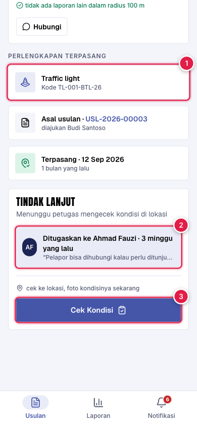
Detail tugas 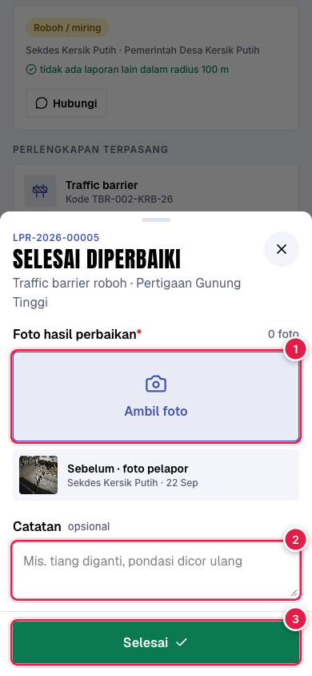
Selesai diperbaiki
Hak akses
Siapa bisa apa
Peran Yang bisa dilakukan Memindai QR, melihat info dan riwayat, melaporkan kerusakan Semua fitur Aset: melihat, mencatat pemeliharaan , mengunduh, cetak label, mengelola data lama; menugaskan/menolak laporan Melihat Aset, mencatat pemeliharaan , melihat catatannya sendiri, mengerjakan laporan yang ditugaskan kepadanya Mengatur kode singkat dan jenis; di Aset hanya melihat , mengunduh, dan mencetak label
Perhatikan Tombol yang tidak berhak tidak ditampilkan , dan server juga menolaknya. Jadi bila seseorang tidak melihat sebuah tombol, cek dulu perannya di Pengaturan → Pengguna.
Data yang sudah ada
Apa yang terjadi pada data lama
Keadaan sebelumnya Setelah pembaruan Satu baris berisi banyak unit (mis. rambu × 5) Dipecah jadi 5 unit , masing-masing berkode. Baris asli menjadi unit pertama. Perlengkapan per ruas (marka, guardrail) Tetap satu baris berjumlah, dengan satu kode . Data tanpa kecamatan atau tahun Tetap tercatat sebagai BELUM BERKODE . Kode dibuat otomatis begitu datanya dilengkapi. Laporan kerusakan yang sudah selesai Otomatis menjadi catatan di riwayat unitnya.Tautan dan QR lama (/lapor/…) Tetap berfungsi .
Saat dipasang di server Kami membuat cadangan database dulu, karena pemecahan unit tidak bisa dibatalkan sepenuhnya.
Mohon arahan Bapak
Lima hal yang perlu dikonfirmasi
Pertanyaan Yang kami pakai sementara 1. Kode singkat resmi tiap jenis perlengkapan dan kecamatan Contoh: RMB, PJU, WL, MRK, GRL; BTL, SPE, KRB. Mudah diganti admin. 2. Marka, guardrail, pita getar, ZoSS: satu kode per ruas , bukan per meter? Satu kode per ruas atau paket 3. Halaman scan publik: boleh menampilkan foto dan catatan perbaikan ? Hanya tanggal, kegiatan, dan catatan singkat. Tanpa foto 4. Unit lama tanpa tahun atau kecamatan yang jelas Dibiarkan "belum berkode" sampai Dishub melengkapi 5. Ukuran fisik label QR yang akan dicetak Sedang 60×30 mm dan kecil 40×20 mm
Kode lampu PJU (kode kedua) ditunda sesuai arahan Bapak; strukturnya sudah disiapkan bila nanti diperlukan.
Ringkasnya
Yang perlu diingat tiap peran
Admin Isi kode jenis & kecamatan sekali, sebelum label dicetak.
Koordinator Lengkapi yang belum berkode , cetak uji label, tugaskan laporan.
Masyarakat Pindai QR untuk info & riwayat; lapor rusak tanpa akun.
Petugas Cocokkan kode dengan label, foto hasil, catat perawatan rutin.
Hasilnya Setiap unit punya kode , riwayat lengkap , dan QR yang bisa dipindai siapa saja.